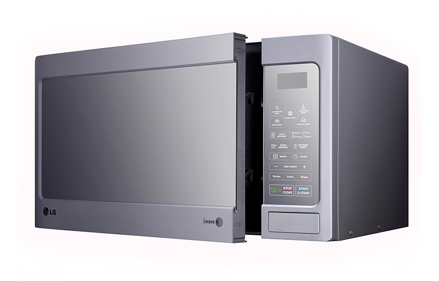

<!--
  Generated template for the PointDetailPage page.

  See http://ionicframework.com/docs/components/#navigation for more info on
  Ionic pages and navigation.
-->
<ion-header>

  <ion-navbar primary>
    <ion-title>ប្តូររង្វាន់</ion-title>
  </ion-navbar>

</ion-header>


<ion-content padding>

  <ion-card>
    <ion-item>
      <h2>Microwave</h2>
    </ion-item>
    
    <ion-item>
     <h2>05/09/2017</h2>
     <h3 item-end>100,000 pts</h3>

   </ion-item>


 </ion-card>

 <ion-card>
  <ion-item>
    <h2>វិក័យប័ត្រទទួលរង្វាន់</h2>
  </ion-item>

  

</ion-card>


<!-- <button ion-button block (click)="backToClaimReward()">បានទទួល</button> -->
<button ion-button block color="light" (click)="backToClaimReward()">បានទទួលរួចរាល់</button>
</ion-content>
